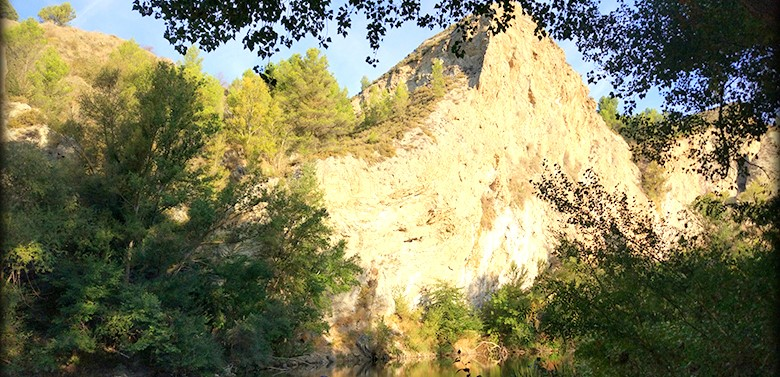
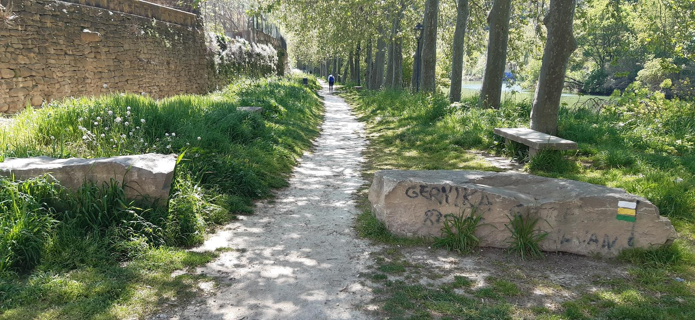

Senderos
Sendero PR-NA 205: Arga - Nekeas - Cañada Real
Esta ruta permite conocer la parte sur del término municipal de Puente la Reina, con un trazado sencillo, aunque más largo que la ruta de Los Fuertes. Al igual que ésta, es una ruta circular que puede recorrerse en ambos sentidos, aunque a continuación se describe en sentido antihorario.
La primera mitad de la ruta recorre la orilla izquierda del río Arga y su bosque de ribera. Tras pasar junto a la antigua central eléctrica y molino, el sendero se dirige hacia la zona de huertas de Campollano por un terreno prácticamente llano. Una extensión de 2 km del recorrido permite descubrir el Rincón de Aizpea, un bonito paraje natural en el meandro del río Arga.
El trazado continúa por la ribera del río y pasa por el Árbol Gordo, un imponente chopo, antes de alcanzar la carretera de Mendigorría. Tras cruzarla, la ruta atraviesa un amplio territorio denominado Nekeas, compartiendo parte de su trazado con la Cañada Real Milagro-Aezkoa. En el Portillo de Nekeas comienza el descenso a Puente la Reina, donde la ruta finaliza recorriendo su espectacular Calle Mayor.
Sendero SL-NA 316: Los Fuertes
Durante las Guerras Carlistas de principios del siglo XIX, en los pequeños cerros que rodean Puente la Reina se construyeron varios fuertes militares. En la actualidad sólo quedan algunos restos de ellos, pero su visita resulta muy recomendable para aprender sobre nuestra historia y obtener excelentes vistas sobre el entorno de la población. La ruta de Los Fuertes visita tres de ellos, además del Montículo El Reducto, un excelente mirador panorámico. Se trata de una ruta circular que puede recorrerse en ambos sentidos y que rodea todo el perímetro de la localidad. Aquí se describe en sentido antihorario.
El recorrido comienza en dirección al antiguo molino, donde arranca el ascenso al Fuerte de San Gregorio. Una vez en lo alto, el trazado gira hacia el este para dirigirse al Portillo de Nekeas. El Fuerte Infanta Isabel es el punto más alto del recorrido. En el posterior descenso pasaremos junto a la Ermita de Arnotegui, El Reducto y la Iglesia del Crucifijo. Tras visitar el fuerte de Zabalzagain, la ruta acaba recorriendo la agradable orilla del río Arga. Una extensión de 2 km del recorrido permite descubrir el Rincón de Aizpea, un bonito paraje natural en el meandro del río Arga.
El trazado continúa por la ribera del río y pasa por el Árbol Gordo, un imponente chopo, antes de alcanzar la carretera de Mendigorría. Tras cruzarla, la ruta atraviesa un amplio territorio denominado Nekeas, compartiendo parte de su trazado con la Cañada Real Milagro-Aezkoa. En el Portillo de Nekeas comienza el descenso a Puente la Reina, donde la ruta finaliza recorriendo su espectacular Calle Mayor